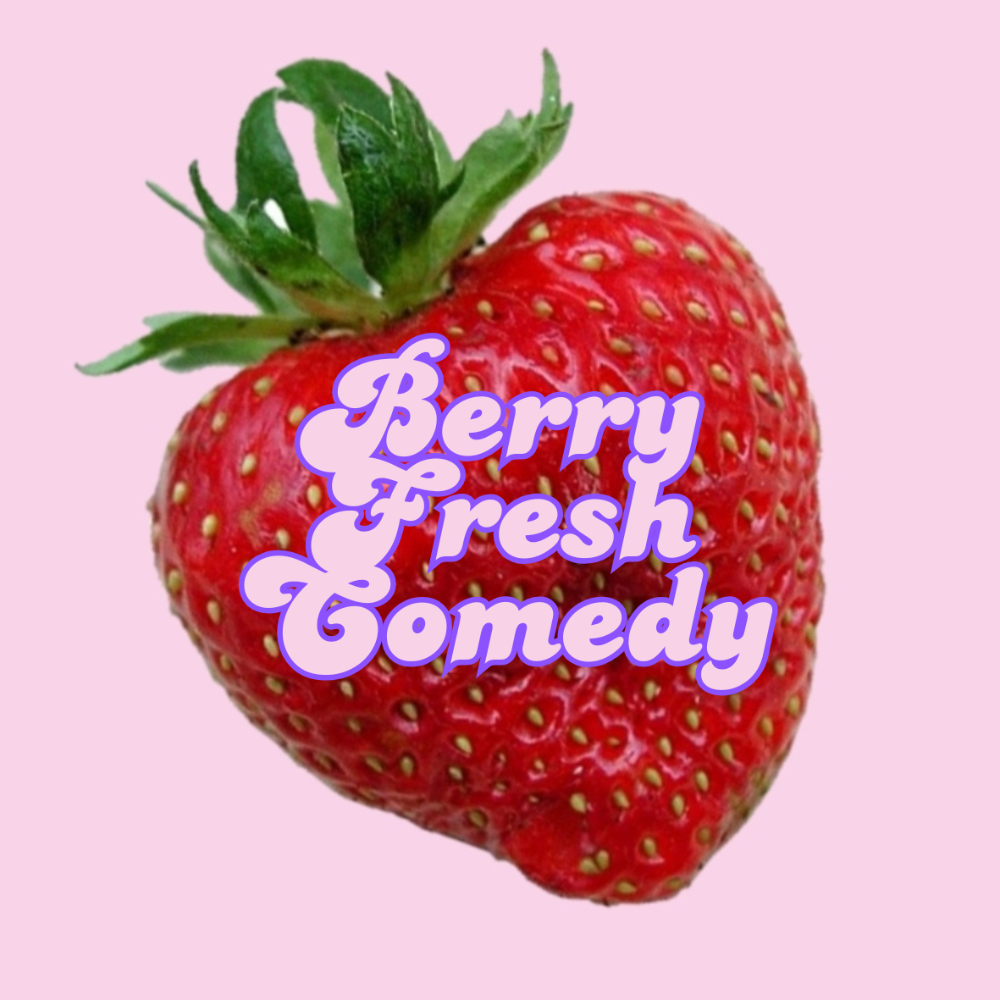
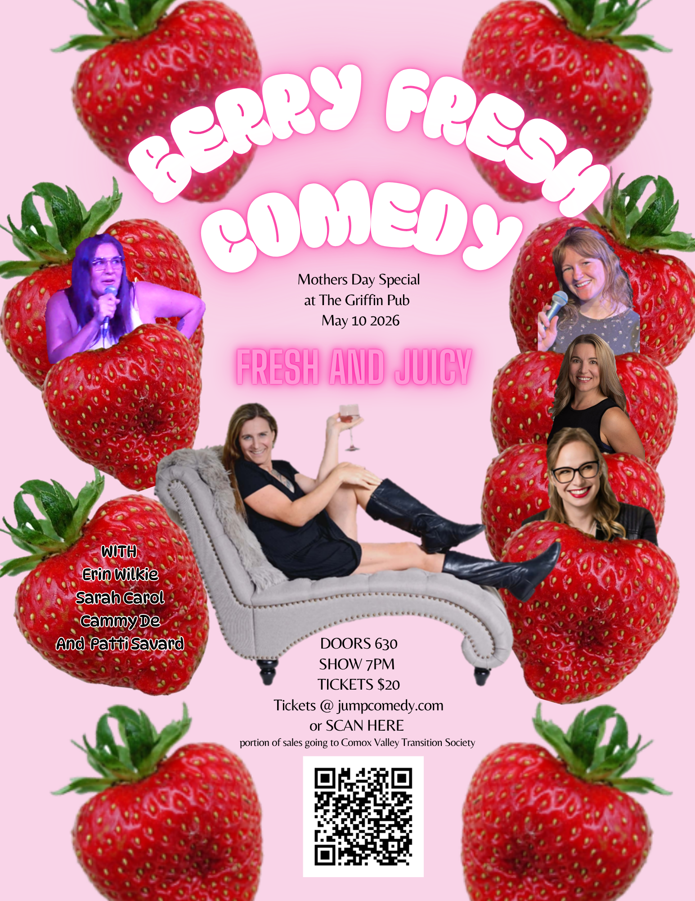
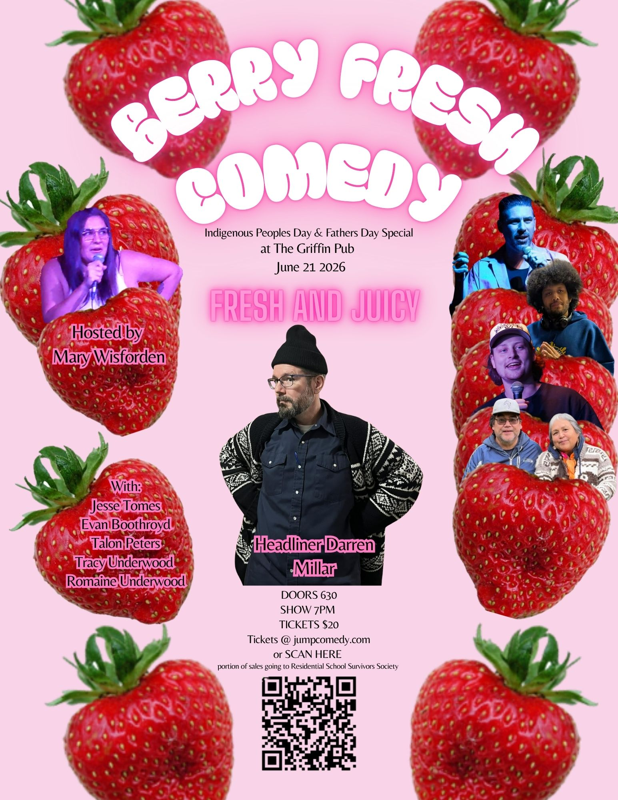

About Us
Inclusive, diverse, and ready to make you burst out laughing
Comedy that pushes the limits, and brings the community together. Always fresh, always juicy, always sweet! Find us monthly at the Griffin Pub Mary Wisforden is a Comox Valley based comedy producer delivering bold, storytelling rooted in real everyday life in motherhood and the Indigenous spirit. Blending “feral housewife” chaos with “deadly auntie” insight
Mary Wisforden offers a fresh, unfiltered take on race, relationships, and navigating your thirties in this pre-apocalyptic world we call home. Standing out for her raw authenticity and sharp, genre-crossing edge.
Our Shows

Mother's Day Show Poster

June's Berry Fresh Show Poster
Our shows are a mix of comedy, storytelling, and community. We feature a diverse lineup of comedians, and we always have a great time. We hope to see you at our next show!
Don't miss out on the fun! Join us for an evening of laughter and connection.
What people are saying!
- "One of the best nights out!"
- "My sides hurt, and my cheeks ached!"
- "When is the next show?"